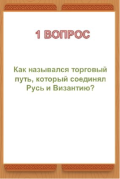
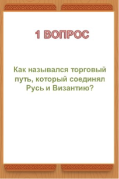

«МКОУ «ООШ с. Кочковатки»
Искусственный интеллект: просто о сложном
«AI — помощник учителя»
Лаборатория возможностей
Новые помощники для работы
Создание иллюстраций и инфографики к уроку.
Kandinsky — GigaChat Gamma.app Supa Shedevrum GPT-botАдаптация материалов под класс.
Фактчекинг
Проверяйте данные, которые генерирует нейросеть
Педагогическая целесообразность
Убедитесь, что материал соответствует целям
Нейросеть — помощник, а не автор
Используйте готовые шаблоны для быстрого создания структуры уроков.
Создаёт структурированный конспект урока.
Посмотреть промпт
Направление: создание каркаса урока
Ты — опытный преподаватель-методист с 15-летним стажем. Разработай структурный план урока по теме «[конкретная тема]» для [класс] класса продолжительностью [количество] минут.
Контекст:
Уровень подготовки учащихся: [базовый/средний/продвинутый]
Цель урока: [сформулируйте цель]
Планируемые результаты: [перечислите 2-3 конкретных навыка]
Задача:
Создай подробный план-конспект с временными рамками, включающий:
Организационный момент (1-2 мин)
Проверка домашнего задания/актуализация знаний (5-7 мин)
Объяснение новой темы (15-20 мин)
Практическая работа (10-15 мин)
Закрепление материала (5-7 мин)
Рефлексия и домашнее задание (3-5 мин)
Формат: таблица с колонками «Время», «Этап урока»,
«Деятельность учителя»,«Деятельность учащихся»,
«Формируемые УУД».
Генерирует упражнения и критерии.
Посмотреть промпт
Направление: разработка задач и упражнений
Ты — эксперт по методике преподавания информатики.
Создай набор практических заданий по теме «[тема]» для [класс] класса.
Контекст:
Тип заданий: [индивидуальные/парные/групповые]
Уровень сложности: [базовый/повышенный]
Необходимое оборудование: [компьютеры/тетради/онлайн-доска]
Задача:
Разработай 3 варианта заданий разного уровня:
Базовый уровень (для всех учащихся)
Средний уровень (для большинства)
Продвинутый уровень (для мотивированных)
Формат: для каждого задания укажи:
Формулировку задачи
Пример ожидаемого результата
Критерии оценки
Время на выполнение
“Промпт” — это текстовая инструкция, то есть задание для искусственного интеллекта.
“Промпт-инжиниринг” — искусство формулировать так, чтобы ИИ понял именно то, что нужно.
Хороший промпт — как хорошее задание ученику: понятно, конкретно, с контекстом и примером.
“Ты — …; Твоя цель — …; Формат — …; Стиль — …”
Промпт-инжиниринг — это новая педагогическая грамотность.
Этот алгоритм показывает, как шаг за шагом использовать нейросеть для создания рабочего листа: от генерации заданий до готового HTML-документа для печати.
Ты — учитель [укажите ваш предмет]/методист школы. Подготовь набор заданий для рабочего листа по теме: [укажи тему]. Цель: [что должны уmetь учащиеся после выполнения]. Класс/уровень: [класс/возраст]. Структура: • Разминка (3 коротких вопроса) • Основной блок (5 заданий разного типа) • Творческое задание (1) • Самопроверка / ключ (краткие ответы). Требования: – разнообразие форматов (множественный выбор, короткий ответ, сопоставление, мини-кейс); – ясный язык, без лишней терминологии; – ограничься объёмом на 1 печатный лист A4; – сделай ключ ответов в конце отдельным блоком на дополнительном листе.
Представь этот рабочий лист в виде кода готовой для печати HTML-страницы, содержащей рабочий лист с нарастающей сложностью заданий и заданиями на рассуждение. Рабочий лист должен быть в красивом дизайне и с приятным внешним видом.
Нет, рабочий лист превышает объём одного печатного листа A4. Оптимизируй его для печати: уменьши отступы между разделами и по краям листа, уменьши шрифт так, чтобы весь рабочий лист поместился на 1 странице A4. Красивый дизайн и приятный внешний вид сохрани.
Генерирует структуру и задания по теме «Квадратные уравнения».
Показать промпт
Ты — опытный учитель математики. Подготовь набор заданий для рабочего листа по математике на тему: «Квадратные уравнения».
Цель: Умение находить корни с помощью формулы дискриминанта
Класс/уровень: 8 класс.
Структура:
2 задания на нахождение корней с помощью формулы дискриминанта;
2 текстовые задачи, оформленные в бытовом контексте;
1 практическую задачу, связанную с площадью фигуры (например , задача про участок земли)
Требования: После каждого задания добавь несколько строк для записи решения.
Ясный язык, без лишней терминологии: используй простые слова, яркие примеры. Оrpaничься объёмом на 1 печатный лист A4. Сделай ключ ответов в конце отдельным блоком на дополнительном листе.
Создаёт красивый печатный HTML-файл.
Показать промпт
Представь рабочий лист как HTML-страницу, готовую для печати.
Учти: объём должен поместиться на одну страницу A4.
Требования к коду:
• красивый дизайн, структурированная разметка;
• фоновый элемент по теме;
• ответы — на отдельной странице, не скрытые при печати.
Оптимизация:
Если лист не помещается — уменьши отступы, интервалы и шрифт,
но сохрани дизайн и читаемость.
Фактчекинг — умение отличать вымысел от исторической правды.
Универсальная формула для создания учебных пособий, игр, наглядности:
Искусственный интеллект не заменит учителя.
Но учитель, умеющий пользоваться ИИ, заменит многих.
ИИ помогает создавать учебные материалы: от структуры заданий до ярких игровых полей. Ниже — промпты, которые можно использовать для адаптации игры под свой класс или тему.
Описание структуры и вопросов для настольной игры.
Показать промпт
Промпт: ты учитель истории, методист.
Составь простую настольную игру-бродилку «Древняя Русь» для 6 класса.
Игровое поле — 20 карточек с вопросами по теме.
Каждая карточка содержит короткий вопрос и 2–3 варианта ответа.
Описание визуального поля игры.
Показать промпт
Промпт для генерации изображения:
«Игровое поле настольной игры “Древняя Русь” для 6 класса.
Стиль — яркая учебная инфографика, умеренная мультяшность.
25 клеток в виде дорожки-змейки. Фон — тёплая палитра: охра, зелёный, терракотовый.
Лёгкая карта Древней Руси IX–XI вв. Стиль чистый и структурированный, без надписей.
Соотношение сторон 16:9».
Описание набора карточек для игры.
Показать промпт
«Карточки настольной игры “Древняя Русь” для школьников.
Стиль — учебная инфографика, лёгкая мультяшность.
Фон — древесно-терракотовые оттенки и орнамент по краям.
Иконки: князь Олег, путь “из варяг в греки”, крещение Руси, Русская Правда.
Современные ровные линии, чёткие силуэты».
 

Раскраски превращаются в инструмент обучения: каждый рисунок содержит задание, требующее знания сюжета и развития логики. Идеально для 5 класса.
Общий промпт для создания комплекта иллюстраций.
Показать промпт
Промпт: ты профессиональный художник и учитель истории.
Создай промпт для серии раскрасок по теме «Мифы древней Греции» для 5 класса.
Раскраски должны быть обучающими, объёмными, с заданиями для проверки знаний
внизу каждой страницы.
Подробное описание одной раскраски.
Показать промпт
Промпт: создай контурную раскраску по мифу «Тесей и Минотавр».
Тесей с мечом и щитом, Минотавр — крупным силуэтом, без агрессивных поз.
Фон — стилизованный вход в Лабиринт.
Чёткие линии, удобные для раскрашивания.
Снизу добавь задание: «Кто помог Тесею выбраться из лабиринта?».
Раскраска с крупной героической сценой.
Показать промпт
Промпт: создай контурную обучающую раскраску по теме «Подвиги Геракла».
Изобрази Геракла в львиной шкуре и с дубиной.
Рядом — символ одного из подвигов: Немейский лев ИЛИ Авгиевы конюшни.
Добавь декоративную рамку из греческого меандра.
Снизу размести прямоугольник: «Подпиши: какой это подвиг Геракла?».
Комиксы с пропущенными датами и терминами — отличный формат для проверки знаний.
Общий промпт по теме «Реформы Петра I».
Показать промпт
Промпт: ты креативный учитель истории. Создай серию исторических обучающих комиксов
по теме «Реформы Петра I», направленных на проверку знаний.
Диалоги — это задания с пропущенными датами и терминами, которые ученики должны вставить.
Подробное описание одного сюжета.
Показать промпт
Промпт: обучающий исторический комикс для 7 класса в стиле яркой учебной инфографики.
Сцена: молодой Пётр I наблюдает за строительством корабля в Воронеже.
Рабочие, мастера, ландшафт XVII века. В диалогах — задания с пропущенными словами.
Пример диалога:
Пётр I: «В ___ году я начал строительство флота на реке ___, чтобы укрепить военную мощь России».
Мастер: «Да, государь, это начало твоей большой ___ реформы».
Ученики заполняют пропуски. Оставь аккуратные пустые поля для ответов.

Промпт для создания зимней вязаной сцены + алгоритм преобразования в видео.
Показать промпт
Промпт: детальная зимняя вязаная сцена, где всё — здания, земля, небо, деревья —
создано вручную из пряжи, шерсти и фетра. Все поверхности из толстой вязки
с видимыми петлями. Земля покрыта пушистым шерстяным снегом.
Яркое небо из синей пряжи с большими мультяшными облаками из белой шерсти.
Мягкий снег из волокон падает в воздухе. Освещение уютное, стилизованное,
в эстетике Pixar. Общий вид: милый, уютный, сказочный, полностью ручной работы.
Стиль: вязаный мир, шерстяной реализм, ручная миниатюра, мультяшные облака,
макродетали пряжи, эстетика стоп-моушн Pixar. Соотношение сторон 9:16.
Промпт для создания фигурки-игрушки по фото + шаги по созданию ролика.
Показать промпт
Промпт: создай высокодетализированное ёлочное украшение в виде стилизованной
миниатюрной фигурки человека с фото. Фигура должна быть похожа на оригинал.
Украшение выглядит глянцевым, лакированным, как коллекционные украшения премиум-класса.
Сохрани черты лица, причёску, пропорции головы и общий узнаваемый облик.
Фигурка стоит прямо, руки аккуратно сложены перед телом, в руках маленький подарок.
Пропорции стилизованные: удлинённые ноги, компактный торс, слегка увеличенная голова.
Фигурка висит на новогодней ёлке, вокруг — тёплые гирлянды, мягкое праздничное освещение.
Онлайн-сервис для создания презентаций с помощью ИИ.